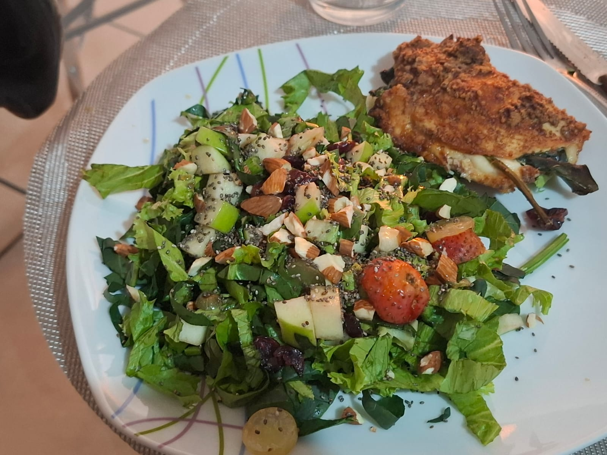

Quesadillas sin harina

Descripción:
Quesadillas sin harina, sin gluten, altas en proteína, un delicioso platillo muy completo y saludable.
Ingredientes
12 porciones.
- 500 g de carne picada de pollo o pavo
- 1 huevo
- Queso de tu preferencia para el relleno
- 1/2 taza de almendra molida
- 1/2 taza de queso parmesano
- Ajo, cebolla, perejil, sal y pimienta al gusto
- Tu ensalada favorita como colación
Procedimiento:
- Mezcla la carne picada con las especias y el huevo.
- Corta los laterales de una bolsa de congelación para abrirla por completo.
- Engrasa un poco tus manos, forma una bolita con la mezcla, colócala en un lado de la bolsa, ciérrala y aplánala con un objeto plano hasta formar un círculo.
- Coloca el queso dentro, cierra nuevamente con el plástico y presiona los bordes para sellar bien.
- Mezcla el parmesano con la almendra molida, pasa las empanadillas por esta mezcla y cocínalas en la air fryer a 200 °C durante 15-18 minutos.
Si es necesario, dales la vuelta para que queden bien doradas por ambos lados.
Acompaña con tu ensalada favorita
Inicio